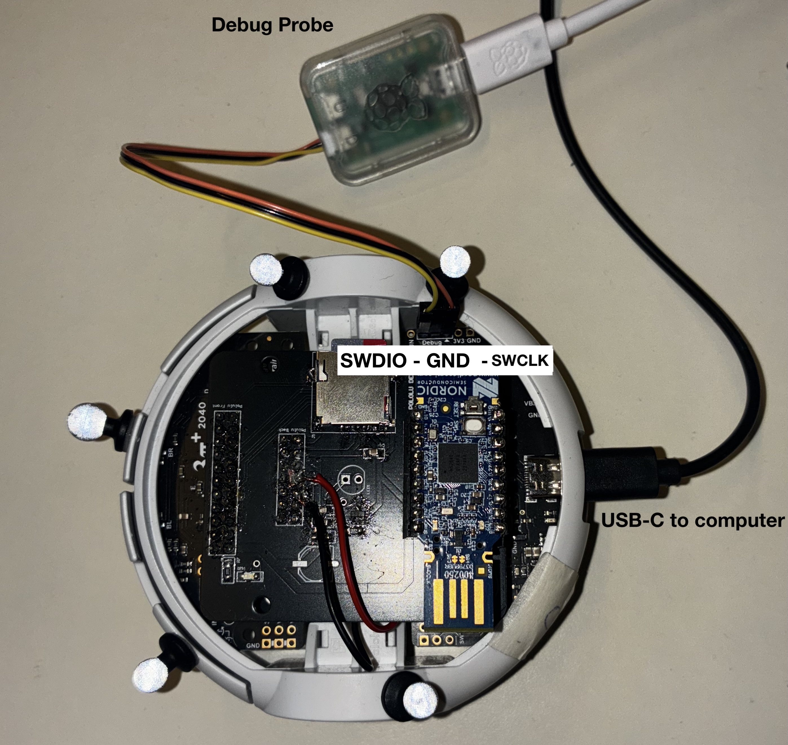

Debugging
This document provides the users with 2 different ways to debug the firmware.
Debugging with Raspberry Pi Debug Probe (Recommended)
The logging is mainly based on probe-rs, defmt and defmt-rtt. There is also a useful blog to learn how to use them very quickly.
- Notice: The installation command on the home page of probe-rs doesn't work for me due to some package conflicts. If so you could try following the instructions and install it from source.
Debug Setup
- You will need a Raspberry Pi Debug Probe(for debugging) and a USB-C Cable(for flashing).
- connect the probe properly to the Pololu. If the official probe is used, the connection should be:
Yellow(SWDIO) -> SWDIO Orange(SWCLK) -> SWCLK Black(GND) -> GND

-
Then connect both the Pololu and the Debug Probe with the USB-C cable to your PC, and uncomment in
config.tomlrunner = "probe-rs run --chip RP2040 --protocol swd" -
If you would like to directly observe the debug information in the terminal, run:
cargo run --release -
If you would like to save the logging information into a csv file, run:
cargo run --release > file_name.csv
OR
flash in bootloader mode and without debug information in the terminal by uncommenting
runner = "elf2uf2-rs -d"
in config.toml and then press "B" and "Reset" on the robot and flash with
cargo run --release
or use the recommended build_system.
Print New Debug Information
The code only prints a test value(constant). When new debug information is needed, use:
info!("New Sensor Data: {}", value);
Debugging with USB
sudo apt install tio
tio /dev/ttyACM0
(use ctrl+t q to exit)